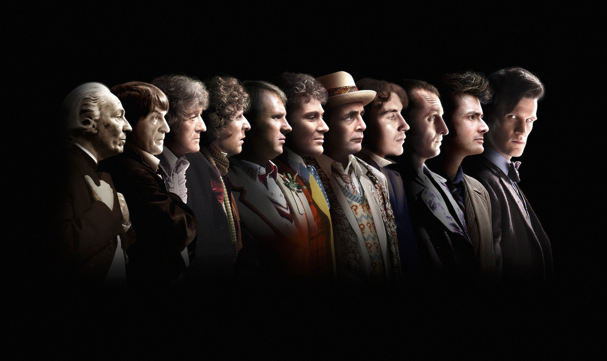

Doctor Who
«Доктор Кто» впервые появился на телеканале «Би-би-си» 23 ноября 1963 года. Изначально сериал был направлен на семейную аудиторию. Подразделение сериалов отдела драмы «Би-би-си» создало 26 сезонов, которые транслировались по каналу BBC One. Однако уменьшение числа зрителей, снижение интереса к сериалу, а также неудобное время трансляции привело к остановке съёмок сериала в 1989 году.
В сентябре 2003 года BBC Television объявила о начале съёмок новых сезонов своими силами после многолетних попыток BBC Worldwide найти поддержку для производства полнометражного фильма. «Доктор Кто» наконец вернулся на экраны с эпизодом «Роза» на канале BBC One 26 марта 2005 года. С того времени было показано десять сезонов в 2005—2008 и 2010—2017 годах, а также специальные рождественские выпуски каждый год, начиная с 2005 года. В 2009 году полный сезон не был снят, хотя вышло четыре специальные серии с Дэвидом Теннантом в главной роли.
Новая версия сериала «Доктор Кто» является прямым продолжением сезонов 1963—1989, так же как и фильм 1996 года. Это отличает сериал от возвращения других известных сериалов, которые обычно представляют собой побочные линии старого сериала или съёмка сериала заново, как, например, «Звёздный крейсер „Галактика“», или происходят во вселенной оригинала, но в другое время и имеют других персонажей, как, например, «Звёздный путь: Следующее поколение» и спин-оффы.
Доктор — эксцентричный инопланетный путешественник великого ума, который сражается с несправедливостью, путешествуя во времени и пространстве на своей старой машине времени под названием ТАРДИС, часто в сопровождении спутников-землян. ТАРДИС выглядит как британская полицейская будка 1960-х, но внутри она гораздо больше, её название является аббревиатурой от Time And Relative Dimension In Space (TARDIS). Доктор принадлежит к расе Повелителей Времени с планеты Галлифрей.
В течение сериала Доктор несколько раз «регенерировал», при этом его внешность и манера поведения менялись — это позволяло продюсерам сериала заменять исполнителя главной роли, при этом подчеркивая, что персонаж, несмотря на смену лица, остается тем же самым, тождественным всем предыдущим воплощениям Доктора. На 2020 год главным героем сериала является Тринадцатый Доктор.
Актеры, игравшие Доктора:
- Уильям Хартнелл
- Патрик Траутон
- Джон Пертви
- Том Бейкер
- Питер Дэвисон
- Колин Бейкер
- Сильвестр Маккой
- Пол Макганн
- Кристофер Экклстон
- Дэвид Теннант
- Мэтт Смит
- Питер Капальди
- Джоди Уиттакер
Помимо вышеперечисленных актёров, есть и другие, сыгравшие роль Доктора. Так, в 2013 году Джон Хёрт сыграл неизвестную ранее инкарнацию, Военного Доктора. Хронологически он был вставлен между инкарнациями Макганна и Экклстона (между Восьмым и Девятым Доктором), но так, чтобы не нарушать сложившуюся нумерацию Докторов. Другим таким примером может служить актёр Майкл Джейстон, сыгравший Валеярда в сезоне 1986 года под названием «Суд над Повелителем времени». Он предстал в виде воплощения тёмных черт Доктора между его двенадцатой и последней инкарнациями.
Заставка
От винта!